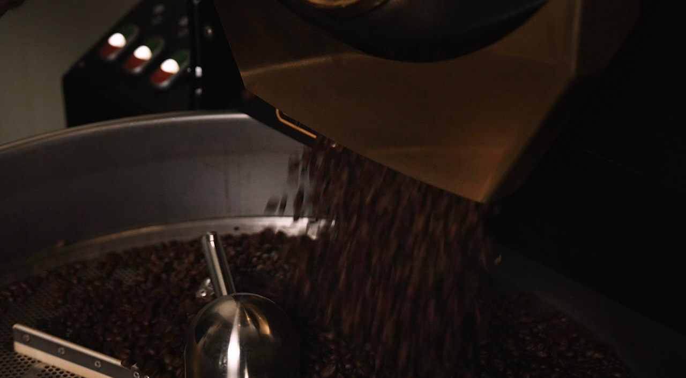
01. 원두 납품
최고 수준의 센서리 능력을 갖춘 큐그레이더가 직접 로스팅하고 커핑을 통해 품질을 평가합니다. 단순 원두 제공을 넘어 맛있는 커피 한 잔으로 완성되는 모든 과정을 함께 합니다.
- 초기 세팅 방문 지원
- 파트너 전용 할인가
- 매장 방문 컨설팅
- 상시 1:1 상담
- 커스텀 블렌드 개발
- 싱글오리진 소량 구매
철저하게 통제된 변수로
365일 변함없는 퀄리티를 약속합니다.
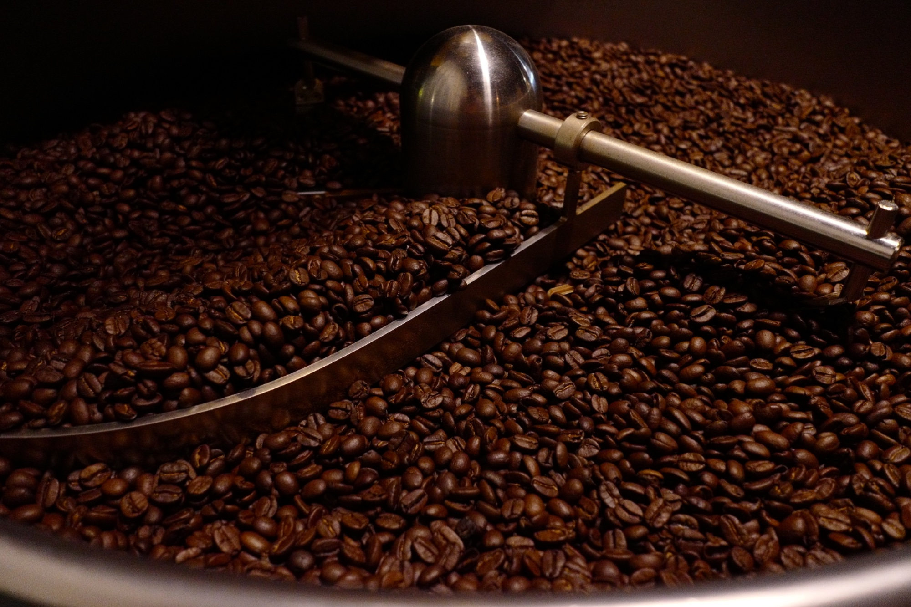
스트레토는
맛있는 커피 원두만 판매하지 않습니다.
맛있는 커피 한잔을 판매합니다.
스트레토 원두가
맛있는 커피 한 잔으로 완성될 수 있도록,
언제 어디서나 가장 맛있게 드실 수 있도록,
스트레토는 모든 과정을 세심하게 케어합니다.

최고 수준의 센서리 능력을 갖춘 큐그레이더가 직접 로스팅하고 커핑을 통해 품질을 평가합니다. 단순 원두 제공을 넘어 맛있는 커피 한 잔으로 완성되는 모든 과정을 함께 합니다.
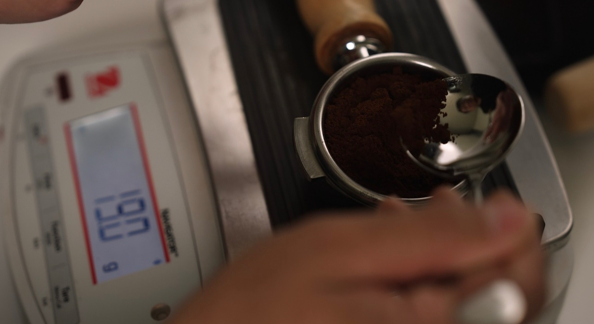
카페 창업 마스터 매뉴얼 제공
자세히 보기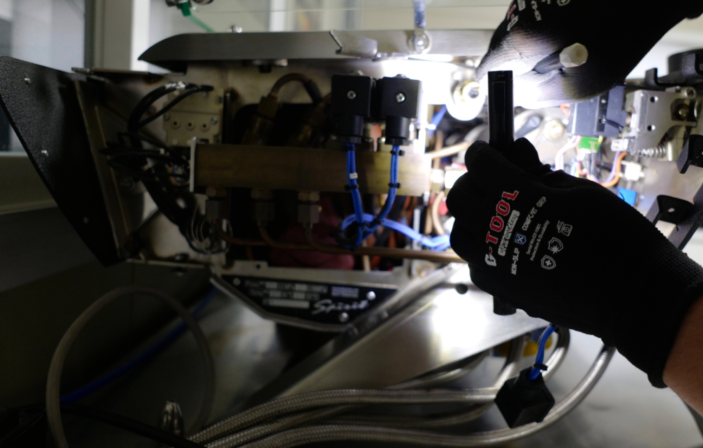
스트레토는 커피머신 엔지니어 공식 인증 자격증을 보유하고 있습니다. 단순한 소모품 교체부터 복잡한 내부 수리, 그리고 수리 완료 후 커피 품질의 완성까지 스트레토가 직접 책임지고 해결해 드립니다.
Partner Benefit긴급 상황 시 최우선 방문 지원
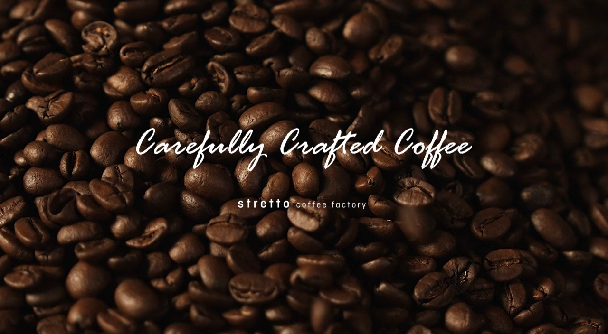
스트레토는 에스프레소의 한 종류인 'Ristretto(리스트레토)'에서 영감을 받았습니다.
짧은 시간에 추출하여 강렬한 맛과 향을 담은 리스트레토처럼,
강렬한 첫인상과 오래 남는 깊은 여운을 전하고자 합니다.
짙고 깊은 잔향의 고품질 커피로
마음속에 오래 기억되는 이름이 되겠습니다.
스페셜티 커피 문화가 활발히 확산되던 2000년대 초반, 미 중서부를 대표하는 스페셜티 커피의 거점인 시카고에서의 생활은 커피에 대한 높은 기준과 섬세한 감각을 기르는 토대가 되었습니다.
이후 한국에서 로스팅·센서리·바리스타 분야의 전문가이자 다수의 커피 대회 심사위원으로 활동하며, 직접 카페를 운영하고 원두 납품과 카페 컨설팅까지 다양한 현장 경험을 쌓았습니다.스트레토는 다양한 전문성과 현장 경험을 지닌 커피 분야 전문가와 광고회사 AE 출신의 브랜드 커뮤니케이션 전문가가 만나 오랜 시간 내실을 다지며 성장해 온 브랜드입니다.
스트레토의 모든 구성원은 Consistency · Intensity · Responsibility 세 가지 원칙 아래, 커피와 브랜드의 본질에 충실하는 것을 최우선 가치로 삼습니다.
생두 선별과 로스팅은 물론 고객과 파트너사를 마주하는 모든 순간에 이 기준을 지키며,
일상 속 편안한 한 잔의 커피부터 파트너 매장의 지속 가능한 성장까지 진심을 담아 함께합니다.
SCA Roasting · Barista · Sensory Skills Professional | Licensed Q Grader | Certified Coffee Machine Engineer | Judge (Korea Coffee Roasting Championship 2024, 2026 · Ikawa Roasting Championship 2023 · Master of Brewing 2023 · Global Coffee Championship 2020 · Korea National Barista Championship 2019)
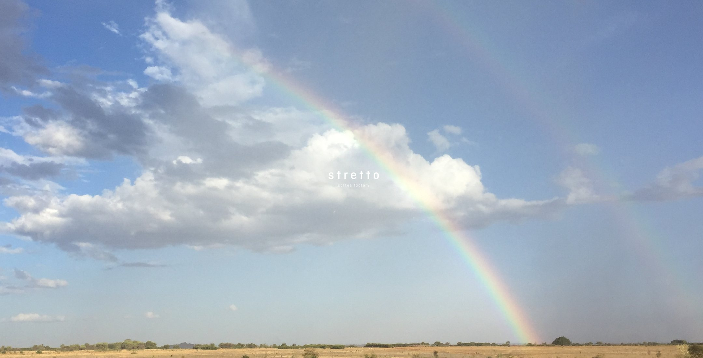
우리가 마시는 커피의 99%는 물입니다.
하지만 아이러니하게도 커피를 생산하는 많은 나라의 아이들은
마실 물을 얻기 위해 하루 평균 6km 이상을 걸어야 하고,
그마저도 깨끗하지 않은 경우가 많습니다.
오늘도 스트레토 커피 팩토리는 커피 생두를 보내준 나라에
깨끗한 물을 선물해주는 날을 꿈꾸며,
정성껏 로스팅한 커피로 얻은 결실을 커피나무가 자라는 땅에
다시 돌려주기 위해 매일 최선을 다해 로스팅 합니다.
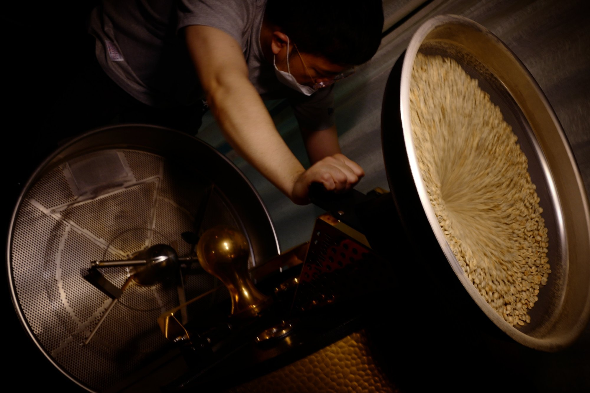
스트레토가 취향에 맞는 원두를 추천해 드립니다.
고소함 · 묵직함 · 밸런스
산뜻함 · 화사함 · 과일향
드립백 커피는 네이버 스토어 ↗에서 만나보실 수 있습니다.
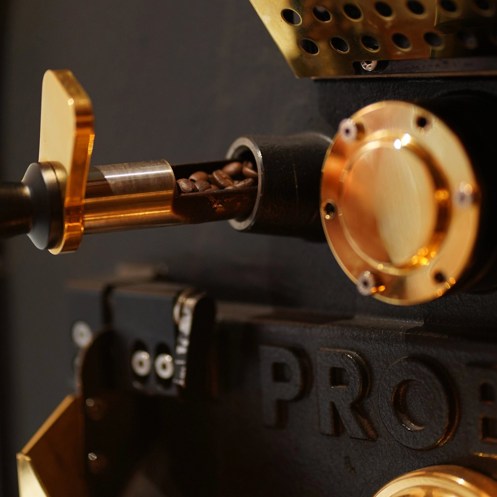
로스팅 대회의 승패를 가르는 것은 0.1점 차이의 디테일입니다.
2019년부터 활동해 온 국가대표 선발전 심사위원의 엄격한 기준으로
매일 생산되는 원두의 퀄리티를 타협 없이 검증합니다.
스트레토의 원두를 구매하신 후 재가공하여 판매할 수 있습니다.
(식품소분업 허가 필요)
정기적인 품질 검사를 통해 안전성을 검증받은,
믿고 구매할 수 있는 스트레토 원두입니다.
재현성과 안정성이 뛰어난 프로밧 로스터기와 스트롱홀드 로스터기를 사용하여
일관성 있는 고품질 원두를 생산합니다.
원두 발송 전 커핑을 통해 맛과 향을 확인하며,
언제나 동일한 품질을 약속합니다.
스트레토는 원두 납품을 넘어 카페 운영의 든든한 파트너가 되어드립니다.
1:1 에스프레소 추출 교육을 제공해 드립니다.
(완벽한 커피 한 잔을 위한 가이드 제공)
월 사용량에 따른 할인 혜택으로
합리적인 가격의 원두를 제공합니다.
요청 시 운영하시는 매장에 방문하여
커피 품질 논의 및 운영 상담을 진행합니다.
카카오톡을 통해 추출, 레시피, 운영 노하우 등 궁금한 점을
언제든 해결해 드립니다.
매장 컨셉에 어울리는 독자적인 블렌딩 개발이 가능합니다.
(비용/단가 별도 협의)
에스프레소 원두 주문 시, 싱글오리진을
200g부터 납품가로 구매하실 수 있습니다.
스트레토가 추구하는 커피의 가치와 진정성에 공감하는 분이라면
누구나 파트너사가 될 수 있습니다.
※ 원두 사용량에 따라 제공되는 혜택은 상이하며,
세부 조건은 개별 상담을 통해 안내해 드립니다.
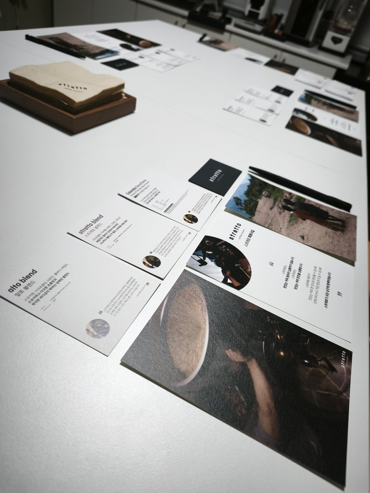
스트레토는 의도한 맛과 향을
온전히 전해드리기 위해 직접 만나 뵙고 소통하며 소개해 드리는 방식을
고수하고 있습니다.
같은 원두라도 추출 환경에 따라 맛이 달라지기 때문에 운영하시는 매장에서 혹은 스트레토 커피 팩토리에서 직접 만나 뵙고 의견을 나누며 원두를 테이스팅합니다.
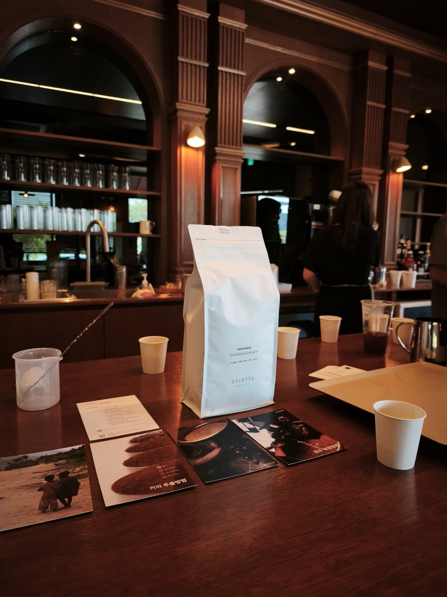
원두를 선택하셨다면,
납품 조건을 함께 정합니다.
사용하실 원두와 월 사용량을 바탕으로 단가를 협의합니다. 사용량에 따라 제공되는 혜택이 달라지며, 세부 조건은 상담을 통해 상세히 안내해 드립니다. 협의 후 정식 계약서를 작성하고, 신뢰를 바탕으로 파트너십을 시작합니다.
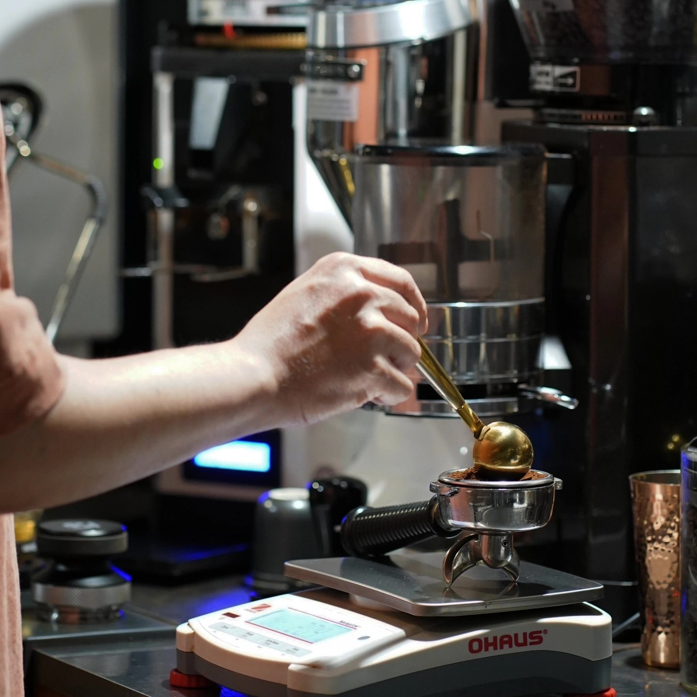
맛있는 커피 원두가 맛있는 커피 한잔으로
추출될 수 있도록 교육해 드립니다.
첫 방문 시, 매장에 직접 방문하여 에스프레소 세팅 및 그라인더와 머신 사용법, 관리 방법까지 1:1 추출 교육을 진행해 드립니다. 매일 같은 한 잔을 내릴 수 있도록 추출 가이드를 함께 드립니다.

맛있는 커피가 유지될 수 있도록
지속적인 관리를 해드립니다.
추출이나 레시피, 운영에 대해 궁금한 점은 카카오톡으로 언제든 물어보실 수 있습니다. 요청하시면 매장에 방문해 커피 품질과 운영을 함께 점검하고, 머신에 문제가 생기면 인증 엔지니어가 우선적으로 찾아가 수리합니다.

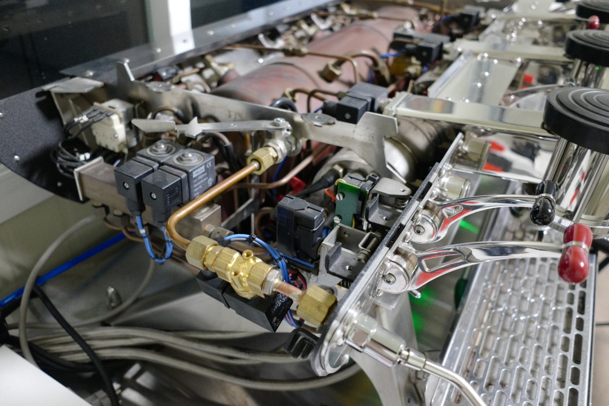
스트레토는 커피머신 엔지니어 공식 인증 자격증을 보유하고 있습니다.
단순한 소모품 교체부터 복잡한 내부 수리, 그리고 수리 완료 후 커피 품질의 완성까지 스트레토가 직접 책임지고 해결해 드립니다.
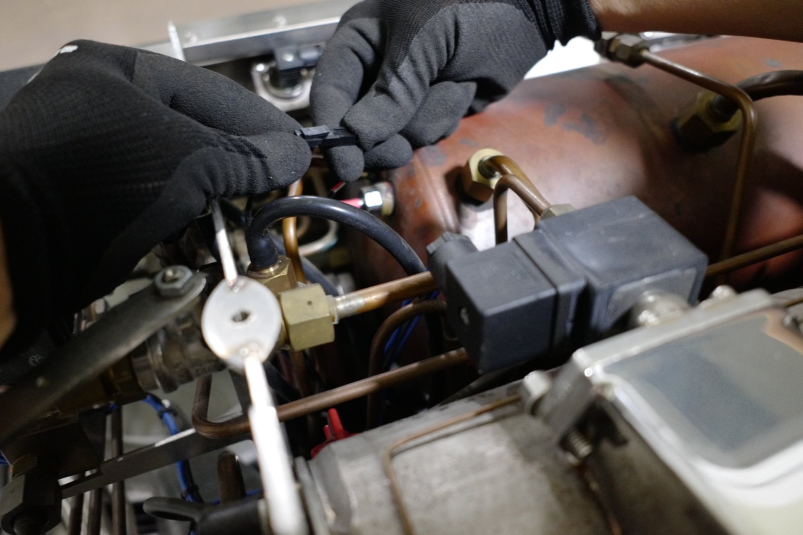
"추출 압력이 떨어져요", "스팀이 약해요" 증상 그대로 편하게 적어주세요.
상담 양식에 매장 정보와 머신 모델명, 증상, 방문 희망 일정을 남겨주시면 엔지니어가 확인하고 연락드립니다.
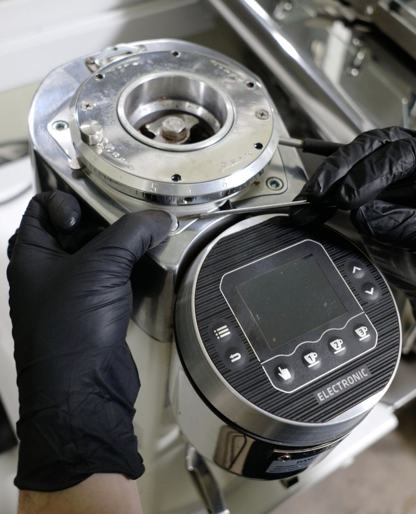
꼭 필요한 경우에만 수리를 진행하고 견적을 안내해 드립니다.
남겨 주신 내용을 토대로 엔지니어가 1차 원인을 진단하고, 상세 수리 계획과 예상 견적을 안내해 드립니다. 직접 진행하는 방법을 먼저 안내해 드리고 원하시는 경우 방문 수리를 진행합니다.
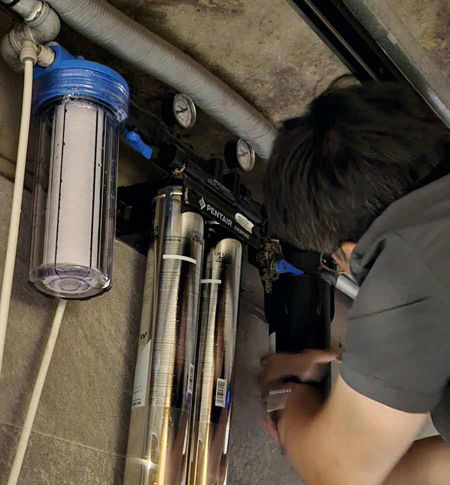
단순 수리를 넘어 커피의 품질을 최종 확인합니다.
견적에 합의하시면 일정을 맞춰 방문 드립니다. 정품 부품으로 교체하고 수리한 뒤, 커피 추출에 가장 중요한 압력과 온도 테스트까지 마치고 정상 작동과 커피 품질을 확인합니다.
머신 고장은 곧 매출 손실입니다. 파트너사의 긴급 상황 발생 시, 최우선적으로 스케줄을 조정하여 현장에 방문합니다.
시중 수리비 대비 합리적인 가격(출장비/기술료 할인)으로 케어 서비스를 제공합니다.
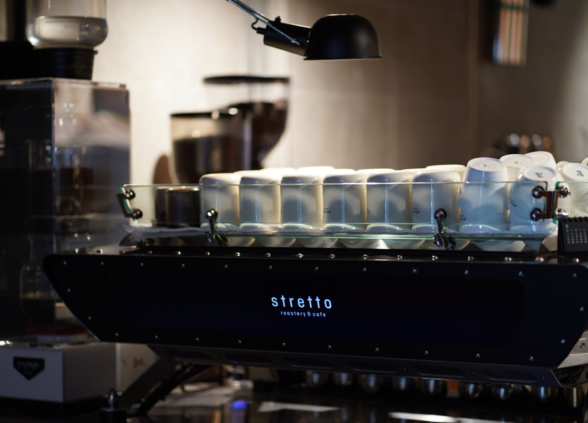
실전형 카페 컨설팅
화려한 이론보다 10년간 치열하게 카페를 운영하며 완성한 핵심 요소만 담았습니다.
머신 선정부터 원두 공급, 안정적인 운영까지 흔들리지 않는 중심을 잡아드립니다.
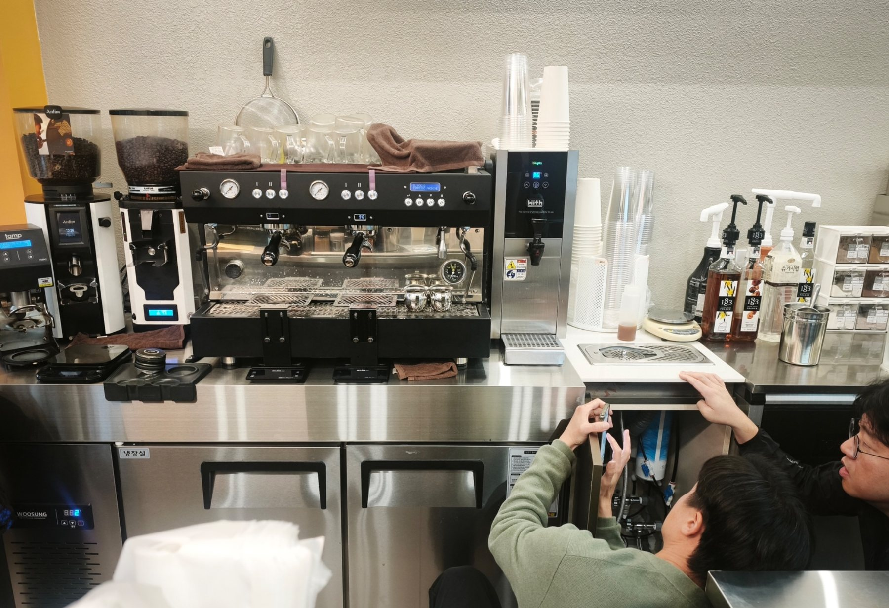
머신 선정부터 정밀한 에스프레소 추출까지, 완벽한 커피 한 잔을 위한 최적의 추출 환경을 설계합니다.
하루 예상 판매량과 메뉴 구성, 매장의 전기 용량과 급배수 위치를 먼저 확인한 뒤, 예산 내에서 머신·그라인더 조합을 함께 고민합니다. 실제 매장에서 사용하게 될 원두로 정수 필터까지 확인해서 오픈 첫 잔부터 의도한 맛이 완성되도록 도와드립니다.
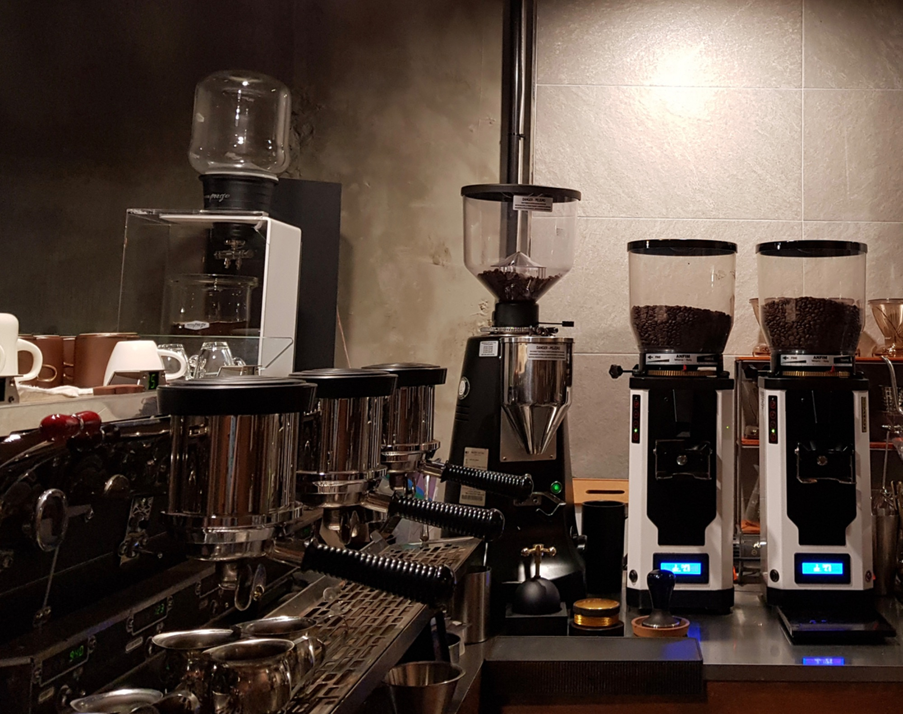
오피스 상권 러시 매장 운영 경험을 바탕으로 바리스타의 피로도를 낮추고 회전율을 극대화하는 현장 중심의 동선을 설계합니다.
주문을 받고, 커피를 추출하고, 음료를 제조해 서빙하기까지 한 방향으로 흐르도록 동선을 설계합니다. 자주 사용하는 도구는 손이 바로 닿는 곳에 두고, 냉장고·제빙기·싱크의 위치는 메뉴를 만드는 순서에 맞추며, 혼자 일할 때와 바쁜 시간 여러 명이 일할 때 겹치지 않도록 고려합니다.
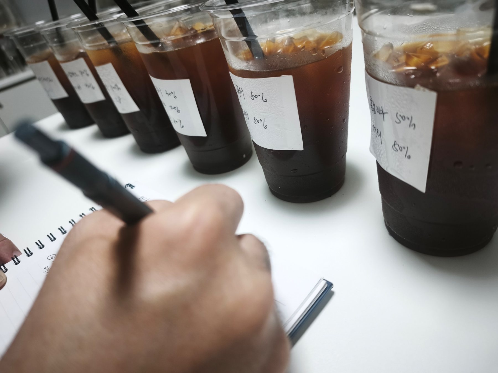
매장 상권과 고객의 취향을 만족시킬 커스텀 시그니처 블렌딩 원두를 제공합니다.
매장의 상권과 주 고객층, 주력 메뉴를 먼저 듣고 그에 맞는 원두를 제안합니다. 스트레토의 대표 블렌드와 더불어 매장 콘셉트에 맞춘 시그니처 블렌드를 개발하여 원두 라인업을 구성할 수 있습니다. (비용·단가 별도 협의)
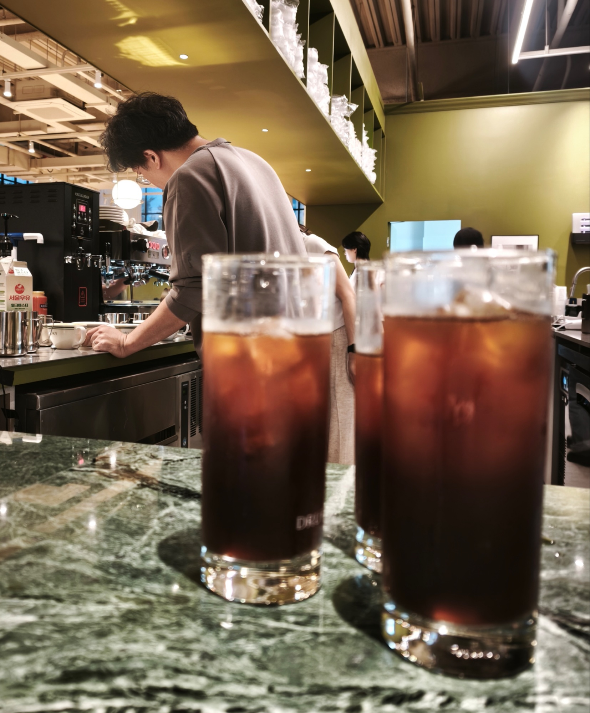
매일 동일한 퀄리티를 유지할 수 있도록, 현장에서 적용 가능한 실전 품질 관리 프로세스를 전수합니다.
매일 영업 전 추출 상태를 확인하는 방법, 원두 보관법, 청소 주기처럼 매장에서 바로 따라 할 수 있는 루틴을 정리해 드립니다. 실무 바리스타 교육을 진행하고 고객 응대 노하우를 전수하여 매장의 서비스 품질을 향상시킵니다.
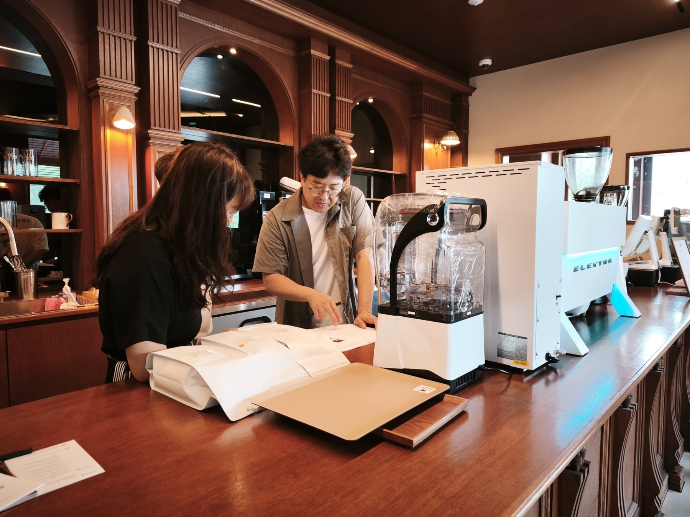
스트레토가 언제나 마음 놓고 의지할 수 있는 따뜻한 조력자로 함께합니다.
수년간의 시행착오로 다진 경험으로 창업의 부담과 불안을 확신으로 바꿔드립니다. 오픈 이후에도 카카오톡으로 추출·레시피·운영에 대해 언제든 물어보실 수 있도록 곁에서 도움 드립니다.
똑같은 창업이 있을 수 없듯, 스트레토의 창업 컨설팅은 반복되지 않습니다.
스트레토의 데이터와 노하우를 더해
오직 한 곳만을 위한 맞춤형 창업 매뉴얼 북을 완성합니다.
창업의 시작부터 끝까지, 보이지 않는 막막한 과정을 선명하게 만들어주는 매뉴얼입니다.
매장 운영의 필수 지침서가 되는 매뉴얼입니다. 커피 기본 세팅 방법 및 문제 해결 방법, 오픈 · 마감 루틴, 위생과 장비 관리 등 실제 운영에 필요한 매뉴얼이 빠짐없이 수록되어 있습니다.
매장에서 판매할 레시피를 확정하는 매뉴얼입니다. 아메리카노 · 라떼 · 에스프레소 등 기본 음료부터 넌커피까지, 레시피를 정하고 음료를 완벽하게 제조하는 방법이 디테일하게 기록되어 있습니다.
처음부터 오픈까지, 오픈 이후에도 무엇을 언제 해야 하는지 정리한 전체 일정과 실제 필요한 지출 내역, 필요한 집기 리스트를 함께 점검해 드립니다.
스트레토는
맛있는 커피 원두만 판매하지 않습니다.
맛있는 커피 한잔을 판매합니다.
각 파트너사 커피 담당자의 커피 이해도와 경험 수준에 따라 맞춤형으로 진행되며,
각 원두의 특성과 매장 머신 종류에 따라 최상의 커피를 추출할 수 있도록 최적의 교육을 제공합니다.
맛있는 한 잔은 정확한 계량에서 시작합니다.
원두 양과 분쇄도, 추출 시간과 추출량을 계량하고 맞추는 방법을 처음부터 차근차근 익힙니다. 맛이 시거나 쓸 때 무엇을 바꿔야 하는지, 그날그날 원두 상태에 맞춰 세팅을 조정하는 방법까지 알려드립니다.
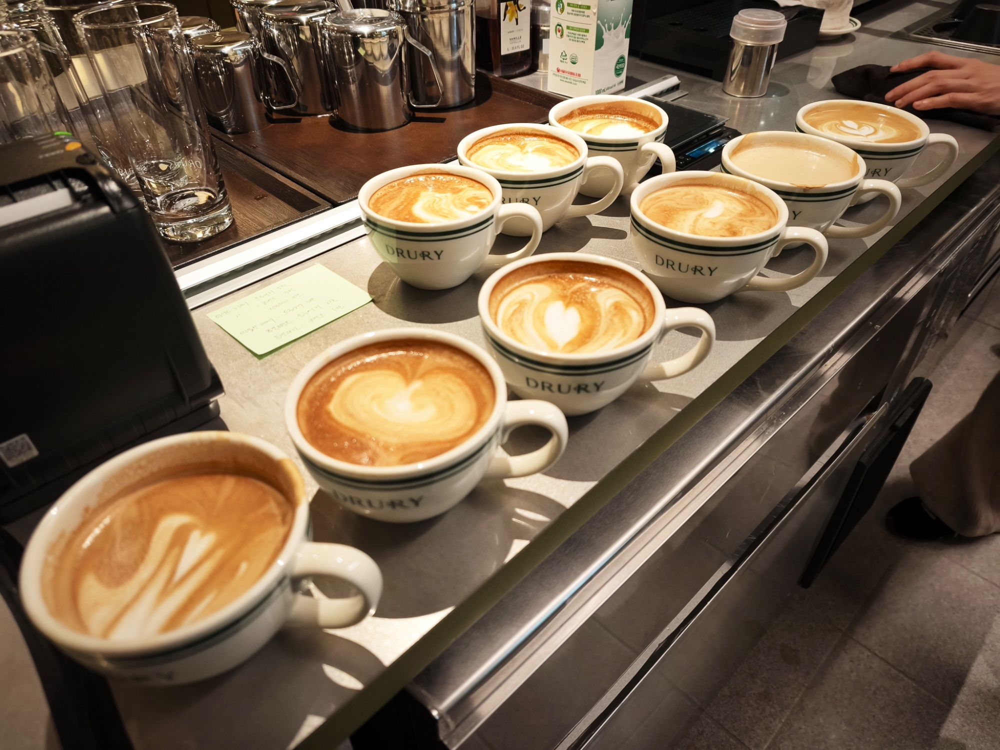
라떼의 맛은 우유의 온도와 거품이 좌우합니다.
부드럽고 고운 거품을 만드는 스티밍 자세와 소리, 알맞은 온도를 손으로 익힙니다. 라떼, 카푸치노, 플랫화이트 각각 메뉴별 스팀의 차이를 교육하여 최상의 밀크베이스 음료를 제공할 수 있게 도와드립니다.
바쁜 시간에도 맛이 흔들리지 않도록 연습합니다.
주문이 몰리는 상황을 가정해 메뉴를 만드는 순서와 동선을 함께 맞춥니다. 손님을 맞이하고 메뉴를 설명하는 응대 노하우도 함께 전수하여 매장의 서비스 품질을 한 단계 끌어올립니다.
언제나 맛있는 커피 한잔을 유지할 수 있게 도와드립니다.
영업 전 추출 점검, 원두 보관법, 머신과 그라인더 청소 주기처럼 매일 따라 할 수 있는 루틴을 정리해 드립니다. 커피 추출 레시피, 메뉴 제조 레시피를 알려드리기 때문에 담당자가 바뀌어도 같은 맛을 이어갈 수 있습니다.
매장의 머신과 그라인더, 메뉴, 교육받을 분의 경험을 먼저 여쭙고 꼭 필요한 내용으로 커스텀 교육을 구성합니다.
매장에 방문하여 매장의 장비와 원두로 1:1 실습 교육을 진행합니다. 완벽한 커피 한 잔의 추출을 위해 성심껏 도와드립니다.
교육에서 확정된 세팅과 레시피를 정리해서 보내드립니다. 추출하는 사람이 달라져도 동일한 기준으로 일관성이 유지된 음료를 제조할 수 있습니다.
교육이 끝난 뒤에도 맛이 달라지거나 궁금한 점이 생기면 카카오톡 혹은 유선 상담으로 편하게 물어보실 수 있습니다.
샘플 테이스팅 신청서를 남겨 주시면 일정을 잡아 연락드립니다.
운영하시는 매장 또는 스트레토 커피 팩토리에서 직접 만나 원두를 테이스팅한 뒤,
단가 협의와 계약을 거쳐 첫 납품 때 매장에 방문해 추출 교육을 진행합니다.
사용하실 원두와 월 사용량을 바탕으로 협의합니다.
사용량에 따라 제공되는 혜택이 달라지며, 세부 조건은 상담을 통해 상세히 안내해 드립니다.
네, 매장 컨셉에 어울리는 시그니처 블렌드 개발이 가능합니다.
(비용/단가 별도 협의)
에스프레소 원두를 주문하시는 파트너 매장은
싱글오리진을 200g부터 납품가로 구매하실 수 있습니다.
스트레토는 식품제조·가공업 정식 인허가를 받은 공장에서 원두를 생산합니다.
구매하신 원두를 재가공하여 판매하실 수 있습니다.
(식품소분업 허가 필요)
3개월 주기로 자가품질검사를 받고, 원두 발송 전 커핑으로 맛과 향을 확인합니다.
언제나 같은 품질의 원두를 보내 드립니다.
머신 케어 신청서에 매장 정보와 머신 모델명, 증상, 방문 희망 일정을 남겨 주세요.
전문 용어를 모르셔도 괜찮습니다. 느끼신 증상 그대로 적어 주시면 엔지니어가 확인하고 연락드립니다.
네, 1차 진단 후 수리 계획과 예상 견적을 먼저 안내해 드립니다.
견적에 동의하시기 전에는 수리를 시작하지 않습니다.
긴급 상황이 생기면 다른 일정을 조정해서라도 가장 먼저 방문하고,
출장비와 기술료를 할인해 드립니다.
머신과 그라인더 선정, 맞춤형 원두, 바 레이아웃, 품질 관리, 직원 교육까지 함께합니다.
컨설팅이 끝나면 매장에 맞춘 운영 매뉴얼도 직접 써 드립니다.
매장에 직접 방문하여, 매장에서 사용하는 머신과 원두로 맞춤형 교육을 진행합니다.
바리스타 교육 보기 ↗한 가지 방법으로 해결되지 않는 경우가 많습니다.
아래 질문에서 맛에 맞는 항목을 찾아 위에서부터 차례로 시도하고, 한 번 바꿀 때마다 두 잔으로 확인해 주세요.
도징량 · 추출량 · 온도는 한 번에 하나씩만 바꿉니다.
이 순서로 확인합니다
앞에서부터 확인하지 않고 분쇄도부터 만지면, 다음 사람이 정상 절차로 뽑았을 때 기준이 어긋납니다.
조정한 뒤에는 한 잔을 더 뽑아 시간과 맛을 확인하고, 바꾼 값은 기록으로 남깁니다.
차례로 시도
함께 확인
차례로 시도
함께 확인
차례로 시도
함께 확인
차례로 시도
함께 확인
차례로 시도
함께 확인
차례로 시도
함께 확인
차례로 시도
함께 확인
차례로 시도
함께 확인
기준에서 벗어난 샷은 제공하지 않고 폐기합니다.
원두마다 밀도와 로스팅 정도가 달라 같은 분쇄도에서도 흐름이 달라집니다.
원두는 각자 담당 그라인더에서만 쓰는 것이 기본입니다.
부득이하게 바꿨다면 두 번 분량을 갈아 버리고 처음부터 다시 맞춥니다.
원두와 커피 가루는 공기 중의 습기를 머금고, 온도에 따라 그라인더 · 머신 · 우유의 상태가 바뀝니다.
아래는 출발점일 뿐이고, 판단은 언제나 시간 · 추출량 · 맛으로 합니다.
연속 분쇄로 그라인더가 뜨거워지면 분쇄가 미세해져 30초가 35초로 점점 느려집니다.
오픈 직후 머신은 온도가 낮아 덜 뽑힙니다. 첫 잔은 체크 샷으로 버립니다.
차가운 잔에 담으면 5~10℃가 바로 떨어지고, 식은 포터필터로 뽑으면 첫 잔 신맛이 강해집니다.
에스프레소 잔은 반드시 예열하고, 포터필터는 늘 그룹에 꽂아 둡니다.
상담을 위해 성함과 연락처를 남겨주세요.
확인 후 바로 답변드리겠습니다. ☕
남겨주신 연락처는 상담 회신 용도로만 사용됩니다.